help can be used only when = exist= & - \ & / just you can imagin the commands in the boxes or groups there is a key to open the whole box \ & = and there is a different one which open the smaller one / & - ,if you want to exit from one group press ;COUNT(*) is a fun from aggeregation funcations there is alot of them you can vist this site to know more postgres in this like you may face this fun like max() , min(), avr(), round note aggregate function calls can't be nestedELSE and END per CASE but multi WHENUSING \! CLS** TO CLEAR SCREEN
\c to connect to another database you can connect to specific things not all database use commands below ,but \c is easy and commonFoto
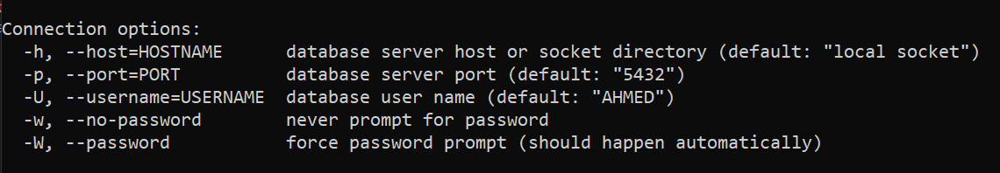
CREATE DATABASE "NAME" & DROP DATABASE "NAME" create and remove whole database just like DELETE FROM "NAME" but this delete only table or column if you specific this Foto
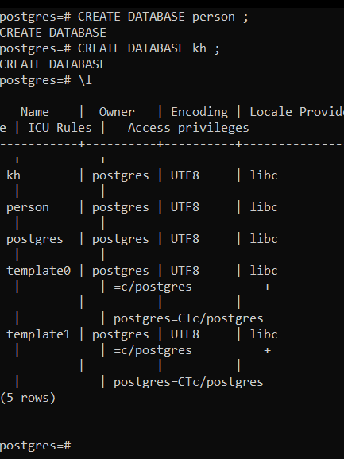
CREATE TABLE men to create table in my database person but first must be connect to this database , you have to know the data types \dt show details about tables in your current database Foto
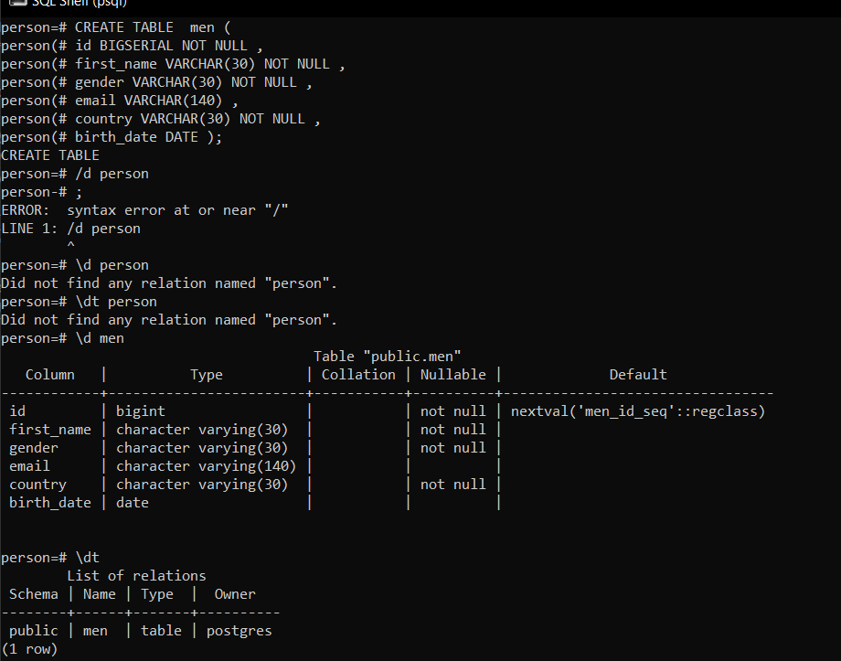
to insert new record use enter the data between ' ' note that if you enter date you must enter DATE '2002-03-30'Foto
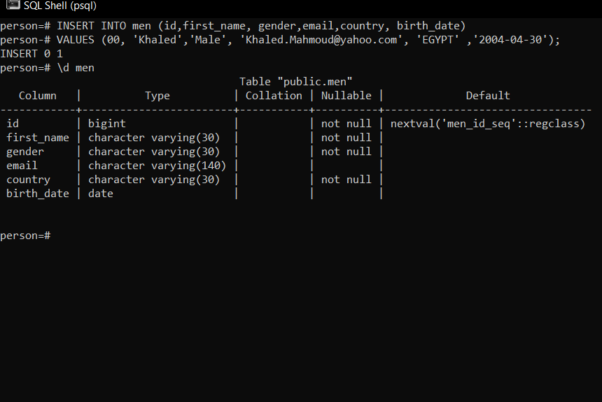\i command and put the path of your SQL file note that / in your path not \if you want any date visit Mockaroo Foto
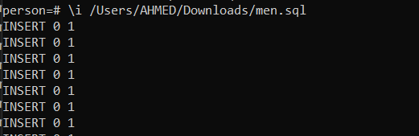
To Read from tables use SELECTFoto
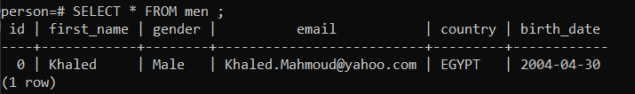
to sort cloums use ORDER BY with DESC or ASC (however ASC is the defult) , this command is the last command we write Foto
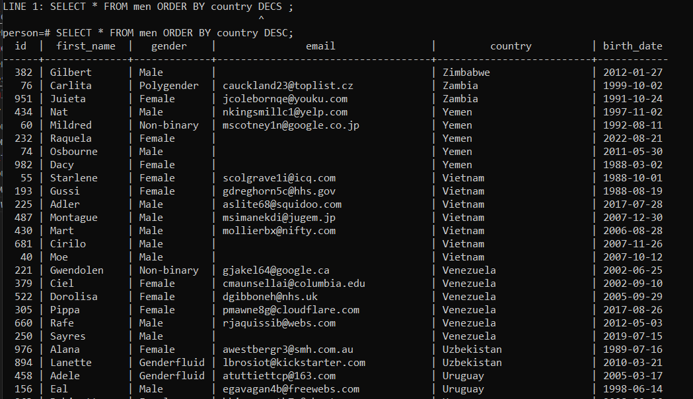
to remove duplicateied date and to only know what is the unique date that we have and how many use DISTINCTFoto
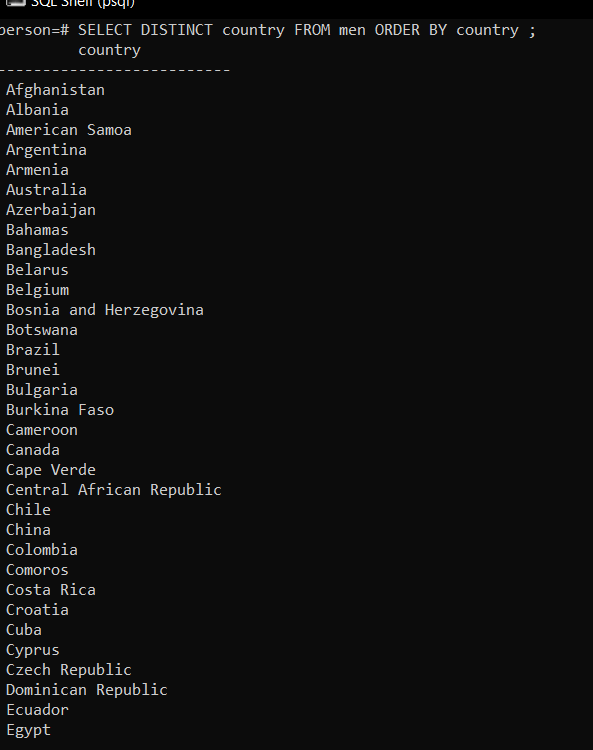
you can also add conditions by using WHERE keyword you can inaddtion use AND OR to have specific condition ,you have a compersion operator like < ,>, =,<> ,<=,>= and it will return t or f or return the query that provides these conditionsFoto
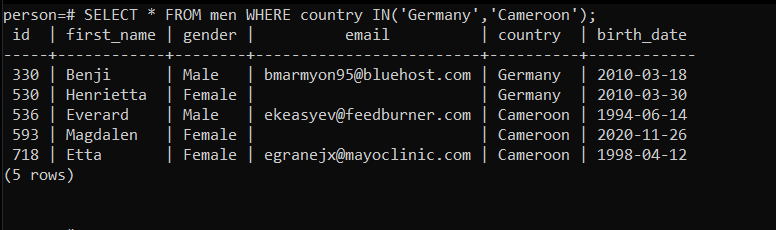
to get range of some number you can use BETWEEN that have the same functionaltyFoto
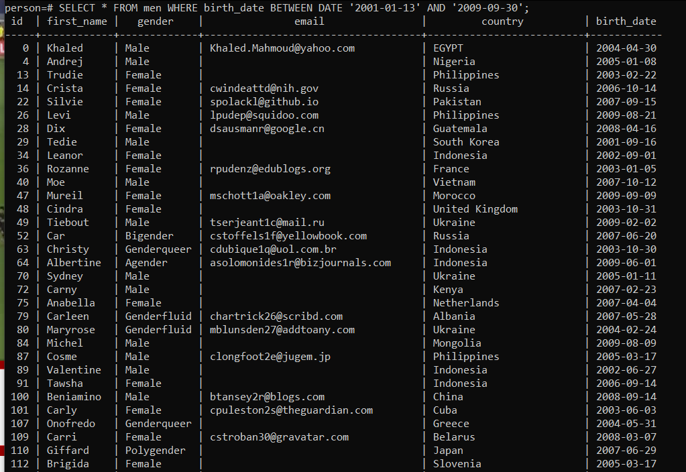
you can know how many this data apper or duplictied by using GROP BY key word but you should use also COUNT() Foto
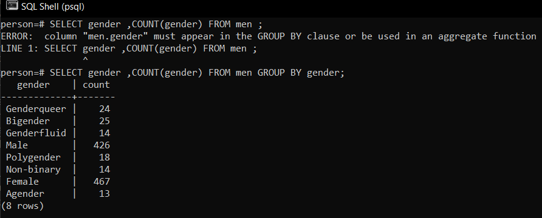
to make any condtions on grop we use HAVING and put the condition in COUNT(*)Foto
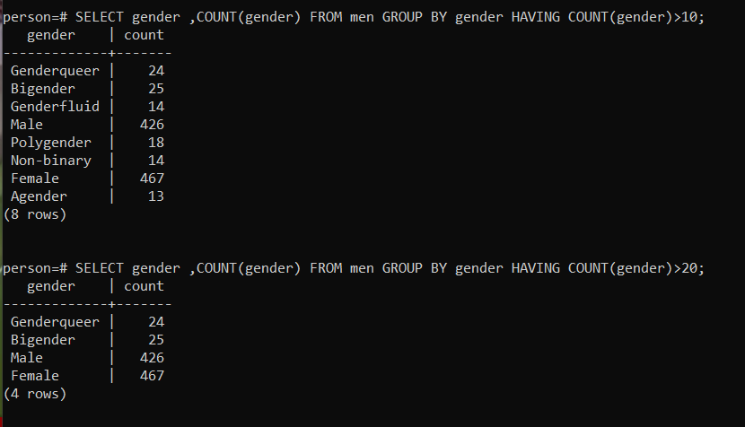
there is a fun to bring data -used with WHERE -that is like to what you looking for is called LIKE or ILIKE there are not pretty diffrenet between them only ILIKE is not case senstive... yoy can add a ounch if underscores to indicate how many letters you want to be found only in your queryFoto
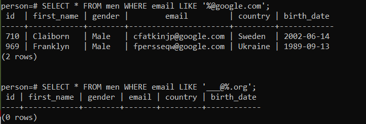
AS key word change the name of the column that you have added or any variable or long name you have to makr it easy to operate with them and we write it at the end of name of any columnFoto
COALESCE key word used to fill null values with a specific character ,Note that don't forget ' 'Foto
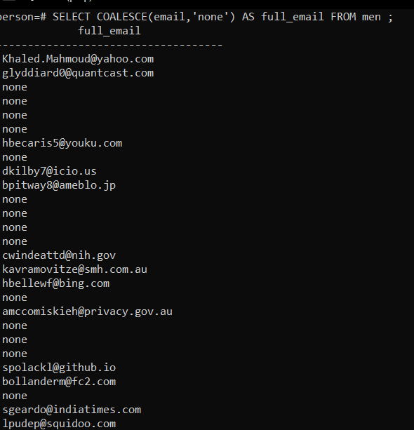
NULLIF key word used to cheak if the two passing numbers are equl so it returns NULL or return the very first value it is good way to handel divide by zero insted of get error message you get null or zero if you use COALESCE Foto
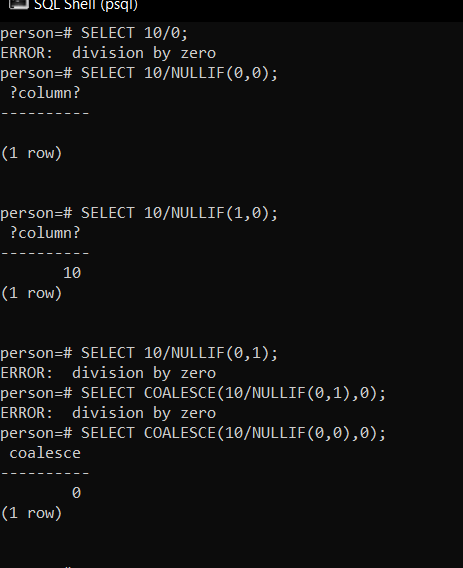
NOW() function return an actual date with time and time zone if you want a piece of it just type :: , if you want a specific part you can use EXTRACTFoto
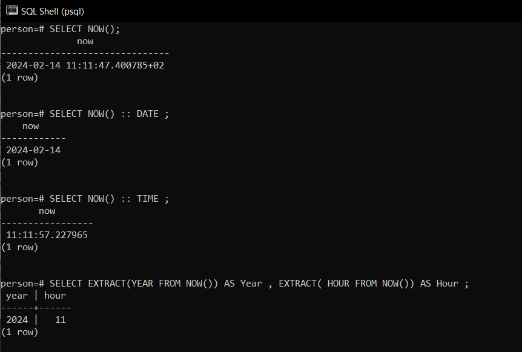INTERVAL ' 'and you can write any time between partices 1 YEAR, 6 MONTH ,10 DAY , there is also a special fun from INTERVAL called AGE('ending','starting') Foto
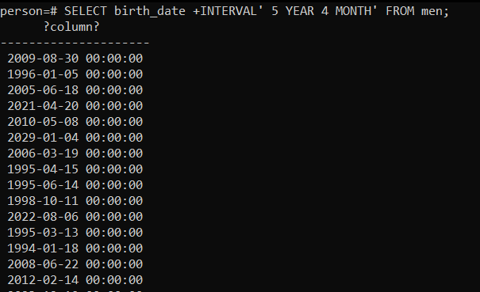 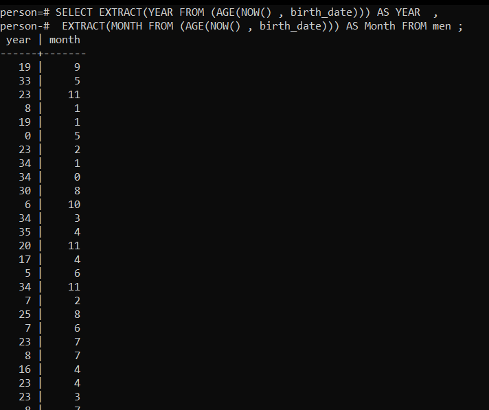
if you want to add a PRIMARY KEY constraint[for rows] or UNiQUE constraint [for column] use ALTER TABLE Foto
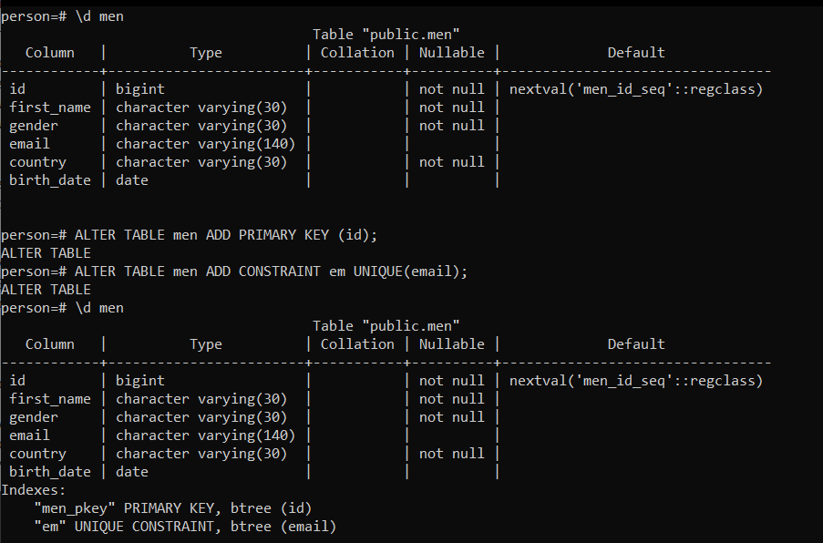ALTER TABLE 'name' DROP Foto
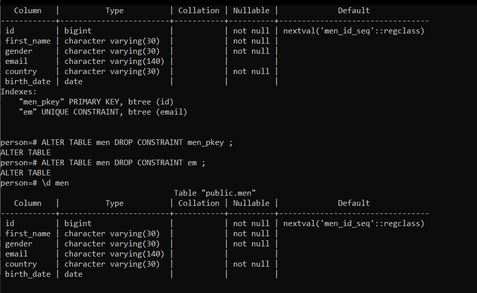CHECK(condition) that can be drive to table by the same way to declear any constraint it used to put a specific constraint depends on the condition--- to remove a specific rows use DELETE FROM men WHERE to remove all table use DROP TABLE men ;orDELETE FROM men ; Foto
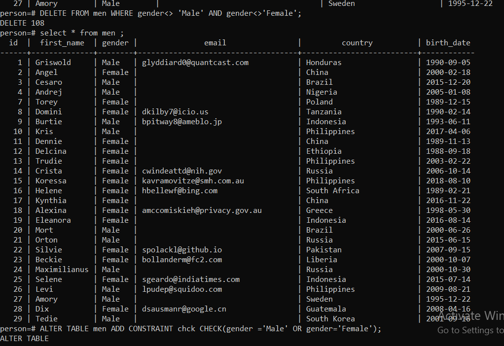
CASE keyword is the correspondent(equivalent) of IF in the another langauage However PostgreSQL has its IF conditions too it only return 0 or 1Foto
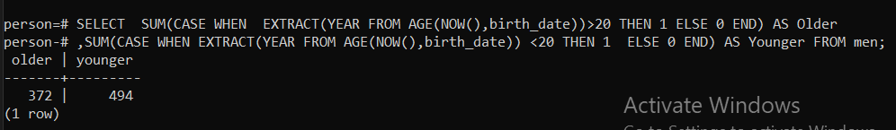
UPDATEto update(edit or add) a column or more in one record or more depend on WHERE Clause record Foto
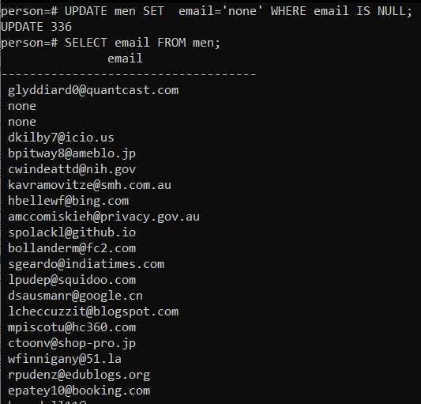
to handel duplicate key conflict which comes throw because of constraints by using
ON CONFLICT ( name of any column has a constraint either primray key or unique constraint) DO NOTHINGthis is useful when database catch a conflict it will continue and go on it will only do nothing ,, but if you want to udpate some date or client enter two diffrent data you must pick up throw lastest one so you want to do UPDATE this is allowed using this ON CONFLICT (id) DO UPDATE SET email= EXCLUDED.email;NOTE that the first email referece to the email which stored and .email referece to email that just pass or want to insert you can add columns as you want to change but remmber to change it first when you insert these using INSERT Foto
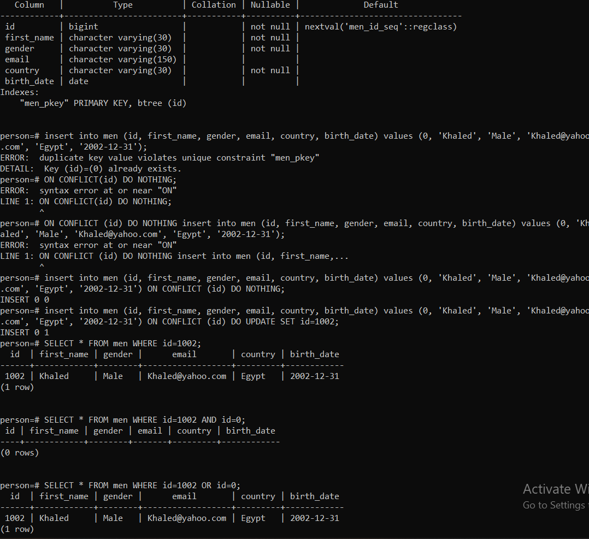
Relation between tables in postgreSQL it will be by using Foreign key it is a primary key that refrece to another primary key in another table and be wrriten in table details when be created in the first time or be added like thatcar_id BIGINT REFERENCES car(id), UNIQUE (car_id) ;which id referece to id in another table and car_id referece to th actual table the most important thing you must write sub-tables in the first then write the main one which has a relations with them Foto
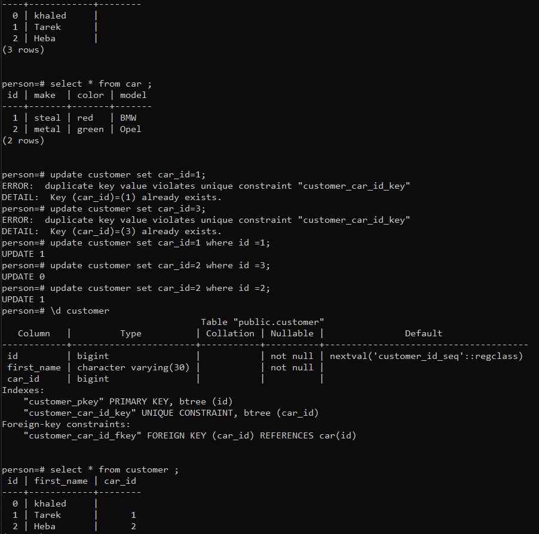
inner joins* we can grab data from table and its relations by using JOIN like that ,after JOIN we write what is the point or column that makes relation between these table ,,, write it like Objects
LEFT JOIN is like JOIN but in JOIN it discards the data that has NULL value in the relation column or the foregin key however LEFT JOIN grab all data in the main table with the intersections too ,like JOIN .Foto
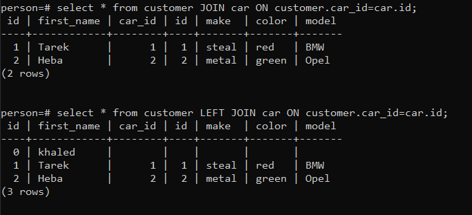